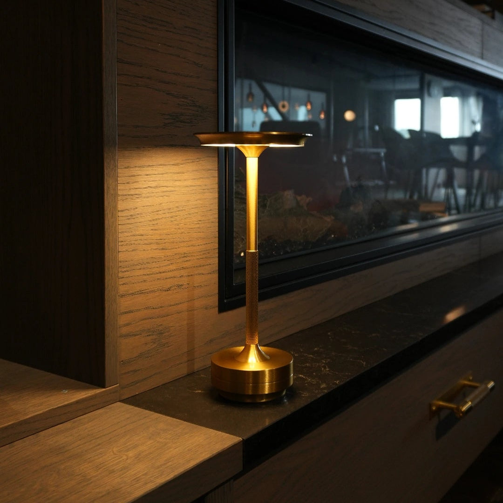
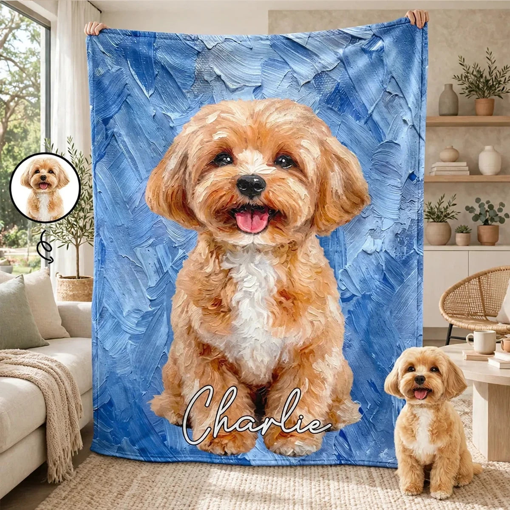

Raio X
Escolha uma pesquisa para explorar o mercado.

Iluminação sem fio
Abajures recarregáveis, luminárias de garrafa e ofertas em par para transformar o ambiente sem instalação.
5 lojas analisadasAbrir pesquisa ↗

Presentes personalizados pet
Retratos, mantas e memoriais com nome e foto do pet, conectando personalização a presentes com significado.
5 lojas analisadasAbrir pesquisa ↗